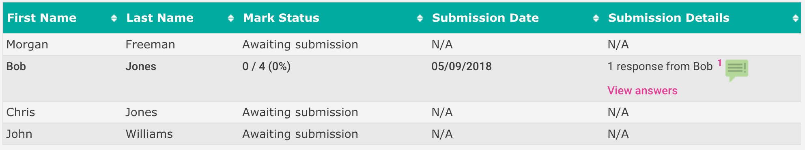
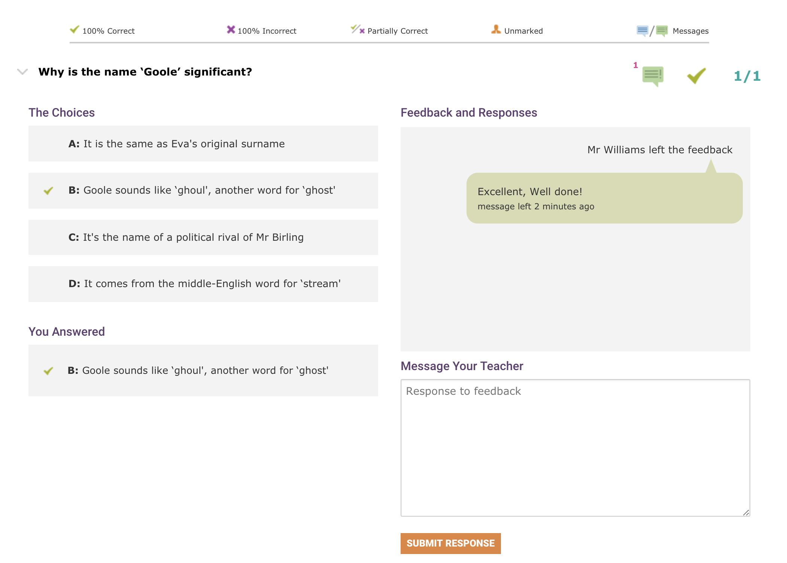
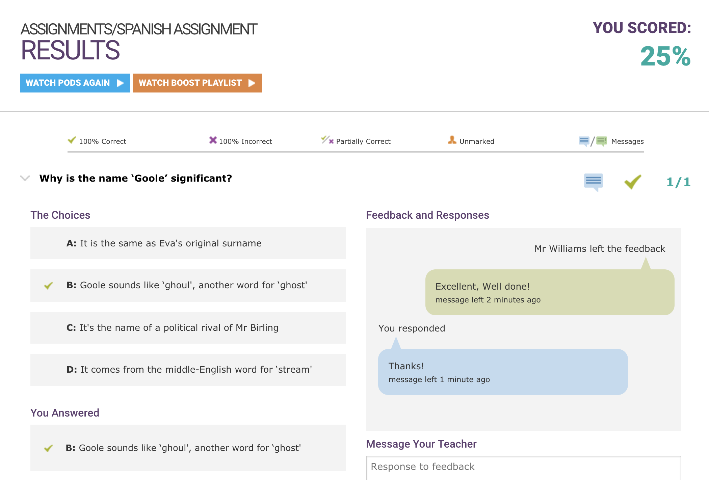
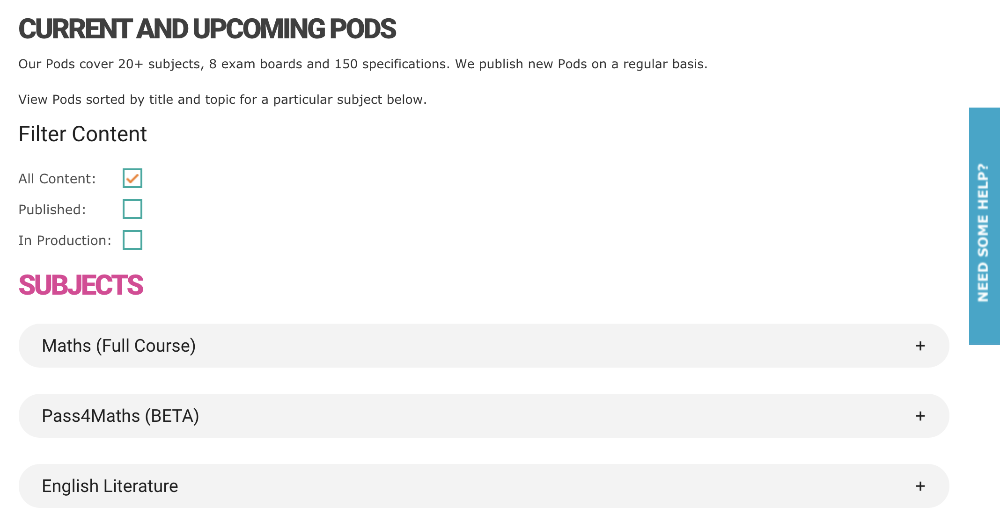
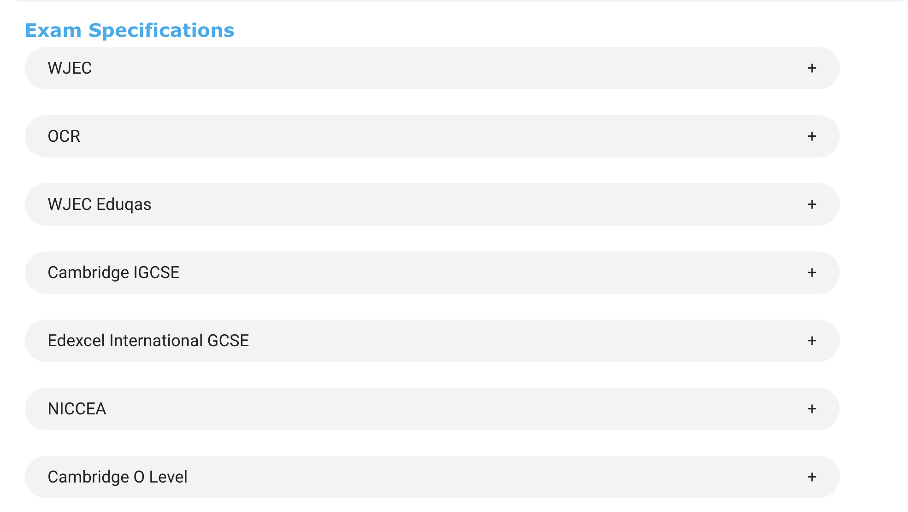
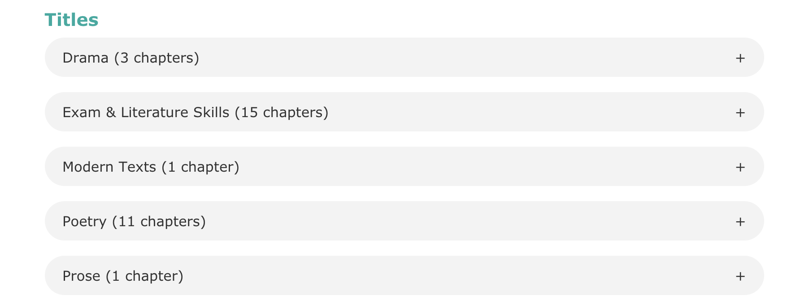
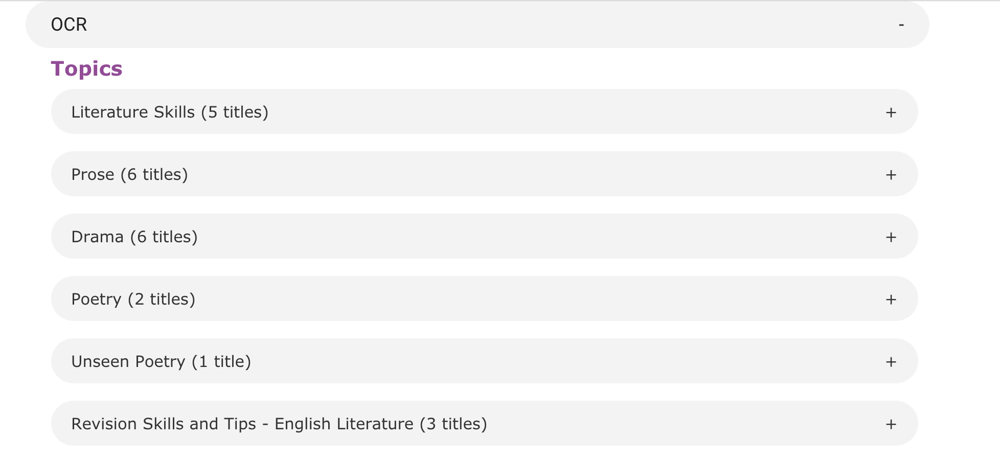
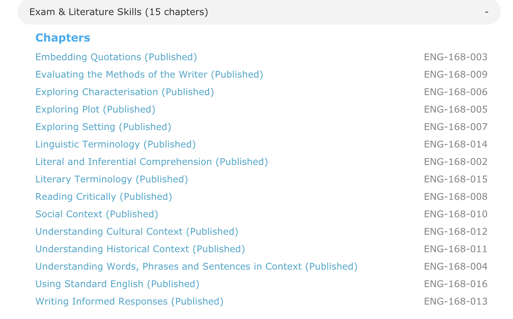

GCSEPod - Industrial Placement, May 2017 to September 2018
Completed an Industrial Placement from May 2017 to August 2019 at GCSEPod as the role of a Web Developer.
Worked on various aspects of the system that make up the Database (90+ tables with 600,000 + active users), Application Programming Interface (API), website and admin interface used by staff at the company. Main duties involved planning and developing new features for the website used by teachers and students, prioritising and completing support tickets as they are logged by the support team in a timely manner. Amended and created functionality on the admin site for staff at GCSEPod to use – with a key aim of reducing the number of support requests that the development team receive on a daily basis.
Key Areas
Notifications Feature
This was the first piece of functionality that I was responsible for including the frontend design, database structure, SQL queries and API calls.
This is a feature available to all teachers and students that provides a centralised list of alerts based around an individual user.
Notification Types For Students:
- Teacher sets them a new assignment.
- Teacher marks a students assignment.
- Teacher leaves additional feedback upon an assignment.
Notification Types For Teachers:
- Student completes a assignment.
- Student responds to feedback upon an assignment.
Shared Notification Types
- Global announcement notification - set by staff in the office which can be any textual input.
Assignment Question Messaging System
A messaging system based around the existing assignment functionality to allow teachers to leave feedback upon student assignment answers and for students to respond to the feedback left by the teacher.
  Site Content List
Functionality to view a full list of content on the site, filtered by subject, examboard, topic, title and pod (video).
    